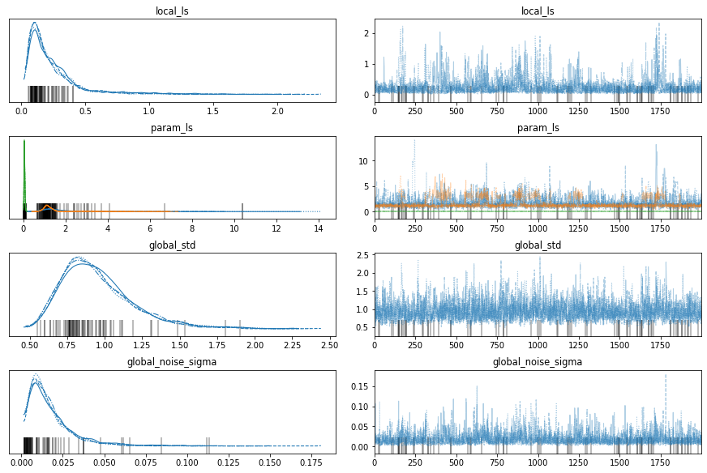

import numpy as np
import matplotlib.pyplot as plt
import pymc3 as pm
from sklearn.cluster import KMeans
### Stationary GP
def kernel(a, b, lenghtscale, std):
"""
Borrowed from Nando De Freita's lecture code
https://www.cs.ubc.ca/~nando/540-2013/lectures/gp.py
"""
sqdist = np.sum(a**2,1).reshape(-1,1) + np.sum(b**2,1) - 2*np.dot(a, b.T)
return std**2*np.exp(-.5 * (1/lenghtscale) * sqdist)
### LLS GP
def global_kernel(x1, x2, l1, l2, std):
sqdist = np.sum(x1**2,1).reshape(-1,1) + np.sum(x2**2,1) - 2*np.dot(x1, x2.T)
l1l2meansqr = (np.square(l1)[:, np.newaxis, :] + np.square(l2)[np.newaxis, :, :]).squeeze()/2
# print(sqdist.shape, l1l2meansqr.shape)
return std**2 * pm.math.matrix_dot(np.sqrt(l1),np.sqrt(l2.T)) * (1/np.sqrt(l1l2meansqr)) * np.exp(-sqdist/l1l2meansqr)
def local_kernel(x1, x2, lengthscale):
"""
Borrowed from Nando De Freita's lecture code
https://www.cs.ubc.ca/~nando/540-2013/lectures/gp.py
"""
sqdist = np.sum(x1**2,1).reshape(-1,1) + np.sum(x2**2,1) - 2*np.dot(x1, x2.T)
return np.exp(-.5 * (1/lengthscale) * sqdist)
n_train = 20
X = np.sort(np.random.uniform(-3.,3.,n_train)).reshape(n_train, 1)
Y = np.vstack([np.ones((n_train//2, 1))*-1, np.ones((n_train//2, 1))*1]).flatten()
X.shape, Y.shape
((20, 1), (20,))
plt.scatter(X, Y);

Stationary GP model¶
basic_model = pm.Model()
with basic_model:
# Priors for unknown model parameters
# Variance
kernel_std = pm.Lognormal("kernel_std", 0, 0.1)
# Length scale
kernel_ls = pm.Lognormal("kernel_ls", 0, 1)
noise_sigma = pm.Lognormal("noise_sigma", 0, 1)
K = kernel(X, X, kernel_ls, kernel_std)
K += np.eye(X.shape[0]) * np.power(noise_sigma, 2)
y = pm.MvNormal("y", mu = 0, cov = K, observed = Y)
pm.model_to_graphviz(basic_model.model)
---------------------------------------------------------------------------
FileNotFoundError Traceback (most recent call last)
~/anaconda3/lib/python3.8/site-packages/graphviz/backend.py in run(cmd, input, capture_output, check, encoding, quiet, **kwargs)
163 try:
--> 164 proc = subprocess.Popen(cmd, startupinfo=get_startupinfo(), **kwargs)
165 except OSError as e:
~/anaconda3/lib/python3.8/subprocess.py in __init__(self, args, bufsize, executable, stdin, stdout, stderr, preexec_fn, close_fds, shell, cwd, env, universal_newlines, startupinfo, creationflags, restore_signals, start_new_session, pass_fds, encoding, errors, text)
853
--> 854 self._execute_child(args, executable, preexec_fn, close_fds,
855 pass_fds, cwd, env,
~/anaconda3/lib/python3.8/subprocess.py in _execute_child(self, args, executable, preexec_fn, close_fds, pass_fds, cwd, env, startupinfo, creationflags, shell, p2cread, p2cwrite, c2pread, c2pwrite, errread, errwrite, restore_signals, start_new_session)
1701 err_msg = os.strerror(errno_num)
-> 1702 raise child_exception_type(errno_num, err_msg, err_filename)
1703 raise child_exception_type(err_msg)
FileNotFoundError: [Errno 2] No such file or directory: 'dot'
During handling of the above exception, another exception occurred:
ExecutableNotFound Traceback (most recent call last)
~/anaconda3/lib/python3.8/site-packages/IPython/core/formatters.py in __call__(self, obj)
343 method = get_real_method(obj, self.print_method)
344 if method is not None:
--> 345 return method()
346 return None
347 else:
~/anaconda3/lib/python3.8/site-packages/graphviz/files.py in _repr_svg_(self)
142
143 def _repr_svg_(self):
--> 144 return self.pipe(format='svg').decode(self._encoding)
145
146 def pipe(self, format=None, renderer=None, formatter=None, quiet=False):
~/anaconda3/lib/python3.8/site-packages/graphviz/files.py in pipe(self, format, renderer, formatter, quiet)
167 data = text_type(self.source).encode(self._encoding)
168
--> 169 out = backend.pipe(self._engine, format, data,
170 renderer=renderer, formatter=formatter,
171 quiet=quiet)
~/anaconda3/lib/python3.8/site-packages/graphviz/backend.py in pipe(engine, format, data, renderer, formatter, quiet)
246 """
247 cmd, _ = command(engine, format, None, renderer, formatter)
--> 248 out, _ = run(cmd, input=data, capture_output=True, check=True, quiet=quiet)
249 return out
250
~/anaconda3/lib/python3.8/site-packages/graphviz/backend.py in run(cmd, input, capture_output, check, encoding, quiet, **kwargs)
165 except OSError as e:
166 if e.errno == errno.ENOENT:
--> 167 raise ExecutableNotFound(cmd)
168 else:
169 raise
ExecutableNotFound: failed to execute ['dot', '-Kdot', '-Tsvg'], make sure the Graphviz executables are on your systems' PATH
<graphviz.dot.Digraph at 0x7f116c8f9670>
map_estimate = pm.find_MAP(model=basic_model)
/home/patel_zeel/anaconda3/lib/python3.8/site-packages/theano/tensor/elemwise.py:826: RuntimeWarning: divide by zero encountered in log
variables = ufunc(*ufunc_args, **ufunc_kwargs)
---------------------------------------------------------------------------
SamplingError Traceback (most recent call last)
<ipython-input-11-5a2cf8bc86b4> in <module>
----> 1 map_estimate = pm.find_MAP(model=basic_model)
~/anaconda3/lib/python3.8/site-packages/pymc3/tuning/starting.py in find_MAP(start, vars, method, return_raw, include_transformed, progressbar, maxeval, model, *args, **kwargs)
104 else:
105 update_start_vals(start, model.test_point, model)
--> 106 check_start_vals(start, model)
107
108 start = Point(start, model=model)
~/anaconda3/lib/python3.8/site-packages/pymc3/util.py in check_start_vals(start, model)
235
236 if not np.all(np.isfinite(initial_eval)):
--> 237 raise SamplingError(
238 "Initial evaluation of model at starting point failed!\n"
239 "Starting values:\n{}\n\n"
SamplingError: Initial evaluation of model at starting point failed!
Starting values:
{'kernel_std_log__': array(-inf), 'kernel_ls_log__': array(0.), 'noise_sigma_log__': array(0.)}
Initial evaluation results:
kernel_std_log__ -inf
kernel_ls_log__ -0.92
noise_sigma_log__ -0.92
y -28.38
Name: Log-probability of test_point, dtype: float64
map_estimate
---------------------------------------------------------------------------
NameError Traceback (most recent call last)
<ipython-input-12-751931f555f6> in <module>
----> 1 map_estimate
NameError: name 'map_estimate' is not defined
with basic_model:
# draw 2000 posterior samples per chain
trace = pm.sample(2000,return_inferencedata=False,tune=1000)
Auto-assigning NUTS sampler...
Initializing NUTS using jitter+adapt_diag...
Multiprocess sampling (4 chains in 4 jobs)
NUTS: [noise_sigma, kernel_ls, kernel_std]
100.00% [12000/12000 00:42<00:00 Sampling 4 chains, 0 divergences]
Sampling 4 chains for 1_000 tune and 2_000 draw iterations (4_000 + 8_000 draws total) took 42 seconds.
import arviz as az
az.plot_trace(trace);
/home/patel_zeel/anaconda3/lib/python3.8/site-packages/arviz/data/io_pymc3.py:96: FutureWarning: Using `from_pymc3` without the model will be deprecated in a future release. Not using the model will return less accurate and less useful results. Make sure you use the model argument or call from_pymc3 within a model context.
warnings.warn(

test_x = np.linspace(-3, 3, 100).reshape(-1, 1)
train_x = X
train_y = Y
def post(train_x, train_y, test_x, kernel, kernel_ls, kernel_std, noise):
N = len(train_x)
K = kernel(train_x, train_x, kernel_ls, kernel_std)+noise**2*np.eye(len(train_x))
N_star = len(test_x)
K_star = kernel(train_x, test_x, kernel_ls, kernel_std)
K_star_star = kernel(test_x, test_x, kernel_ls, kernel_std)
posterior_mu = K_star.T@np.linalg.inv(K)@(train_y)
posterior_sigma = K_star_star - K_star.T@np.linalg.inv(K)@K_star
# Instead of size = 1, we can also sample multiple times given a single length scale, kernel_std and noise
return np.random.multivariate_normal(posterior_mu, posterior_sigma, size=1)
# Make predictions at new locations.
train_y = Y
n_samples = 500
preds = np.stack([post(train_x, train_y, test_x=test_x, kernel=kernel, kernel_ls=trace['kernel_ls'][b],
kernel_std=trace['kernel_std'][b],
noise=trace['noise_sigma'][b])
for b in range(n_samples)])
preds.shape
(500, 1, 100)
ci = 95
ci_lower = (100 - ci) / 2
ci_upper = (100 + ci) / 2
preds_mean = preds.reshape(n_samples, len(test_x)).mean(0)
preds_lower = np.percentile(preds, ci_lower, axis=0)
preds_upper = np.percentile(preds, ci_upper, axis=0)
plt.plot(test_x,preds.reshape(n_samples, len(test_x)).mean(axis=0))
plt.scatter(train_x, train_y, c='black', zorder=3, label='data')
plt.fill_between(test_x.flatten(), preds_upper.flatten(), preds_lower.flatten(), alpha=.3, label='95% CI');

LLS GP¶
n_local = 3
lls_model = pm.Model()
param_X = KMeans(n_local).fit(X).cluster_centers_
with lls_model:
### Local GP
# local lengthscale
local_ls = pm.Lognormal("local_ls", 0, 1)
param_ls = pm.Lognormal("param_ls", 0, 1, shape=(n_local, 1))
local_K = local_kernel(param_X, param_X, local_ls)
local_K_star = local_kernel(X, param_X, local_ls)
### global GP
# global lengthscales
global_ls = pm.math.exp(pm.math.matrix_dot(local_K_star, pm.math.matrix_inverse(local_K), pm.math.log(param_ls)))
# global variance
global_std = pm.Lognormal("global_std", 0, 1)
# global noise
global_noise_sigma = pm.Lognormal("global_noise_sigma", 0, 1)
global_K = global_kernel(X, X, global_ls, global_ls, global_std)
global_K += np.eye(X.shape[0])*global_noise_sigma**2
y = pm.MvNormal("y", mu = 0, cov = global_K, observed = Y)
pm.model_to_graphviz(lls_model.model)

map_estimate = pm.find_MAP(model=lls_model)
100.00% [17/17 00:00<00:00 logp = -21.597, ||grad|| = 0.033776]
map_estimate
{'local_ls_log__': array(-1.07661859),
'param_ls_log__': array([[-0.04218687],
[ 0.2382263 ],
[-0.35624966]]),
'global_std_log__': array(-0.32103389),
'global_noise_sigma_log__': array(-0.967206),
'local_ls': array(0.34074578),
'param_ls': array([[0.95869061],
[1.26899634],
[0.70029776]]),
'global_std': array(0.72539867),
'global_noise_sigma': array(0.38014368)}
with lls_model:
# draw 2000 posterior samples per chain
trace = pm.sample(2000,return_inferencedata=False,tune=1000)
Auto-assigning NUTS sampler...
Initializing NUTS using jitter+adapt_diag...
Multiprocess sampling (4 chains in 4 jobs)
NUTS: [global_noise_sigma, global_std, param_ls, local_ls]
100.00% [12000/12000 01:50<00:00 Sampling 4 chains, 79 divergences]
Sampling 4 chains for 1_000 tune and 2_000 draw iterations (4_000 + 8_000 draws total) took 110 seconds.
There were 25 divergences after tuning. Increase `target_accept` or reparameterize.
There were 13 divergences after tuning. Increase `target_accept` or reparameterize.
There were 14 divergences after tuning. Increase `target_accept` or reparameterize.
There were 27 divergences after tuning. Increase `target_accept` or reparameterize.
The number of effective samples is smaller than 10% for some parameters.
import arviz as az
with lls_model:
az.plot_trace(trace);

test_x = np.linspace(-3, 3, 100).reshape(-1, 1)
train_x = X
train_y = Y
def post(local_ls, param_ls, global_std, global_noise):
N = len(train_x)
param_K_inv = np.linalg.inv(local_kernel(param_X, param_X, local_ls))
local_K = local_kernel(train_x, param_X, local_ls)
global_ls = np.exp(local_K@param_K_inv@param_ls)
local_K_star = local_kernel(test_x, param_X, local_ls)
global_ls_star = np.exp(local_K_star@param_K_inv@param_ls)
# print(global_noise)
K = global_kernel(train_x, train_x, global_ls, global_ls, global_std)+np.eye(N)*global_noise**2
K_inv = pm.math.matrix_inverse(K)
K_star = global_kernel(train_x, test_x, global_ls, global_ls_star, global_std)
posterior_mu = pm.math.matrix_dot(K_star.T,K_inv,train_y)
# K_star_star = global_kernel(test_x, test_x, global_ls_star, global_ls_star, global_std)
# posterior_sigma = K_star_star - pm.math.matrix_dot(K_star.T,K_inv,K_star)
return posterior_mu.eval()
# Instead of size = 1, we can also sample multiple times given a single length scale, kernel_std and noise
return np.random.multivariate_normal(posterior_mu.eval(), posterior_sigma.eval(), size=1)
# Make predictions at new locations.
n_samples = 70
preds = np.stack([post(local_ls=trace['local_ls'][b],
param_ls=trace['param_ls'][b],
global_std=trace['global_std'][b],
global_noise=trace['global_noise_sigma'][b])
for b in range(n_samples)])
preds.shape
(70, 100)
ci = 95
ci_lower = (100 - ci) / 2
ci_upper = (100 + ci) / 2
preds_mean = preds.reshape(n_samples, len(test_x)).mean(0)
preds_lower = np.percentile(preds, ci_lower, axis=0)
preds_upper = np.percentile(preds, ci_upper, axis=0)
plt.plot(test_x,preds.reshape(n_samples, len(test_x)).mean(axis=0))
plt.scatter(train_x, train_y, c='black', zorder=3, label='data')
plt.fill_between(test_x.flatten(), preds_upper.flatten(), preds_lower.flatten(), alpha=.3, label='95% CI');
for x_loc in param_X:
plt.vlines(x_loc, -3, 3);
plt.legend();